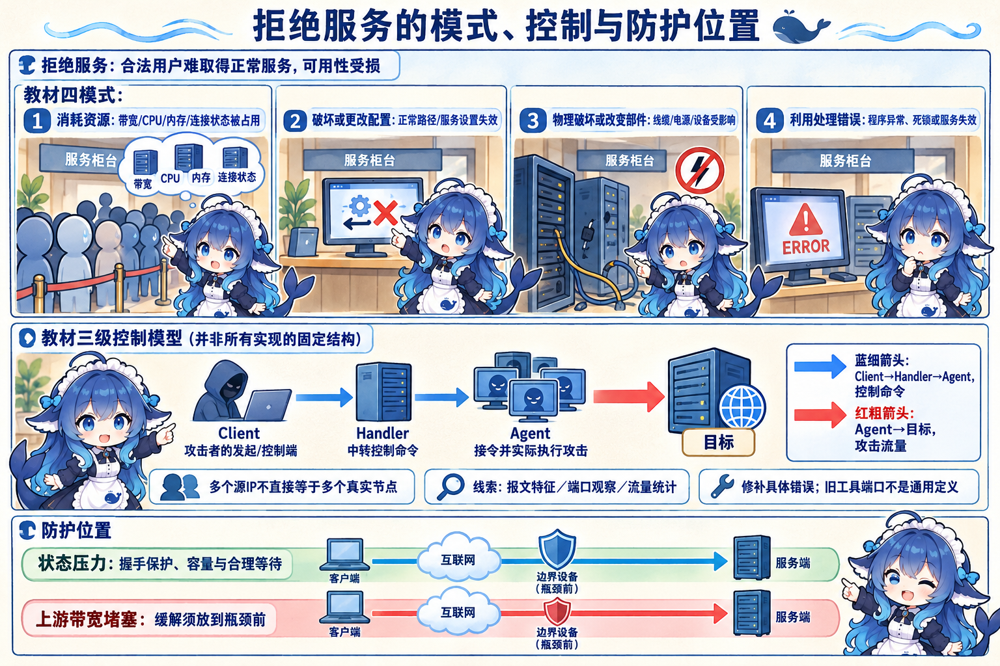
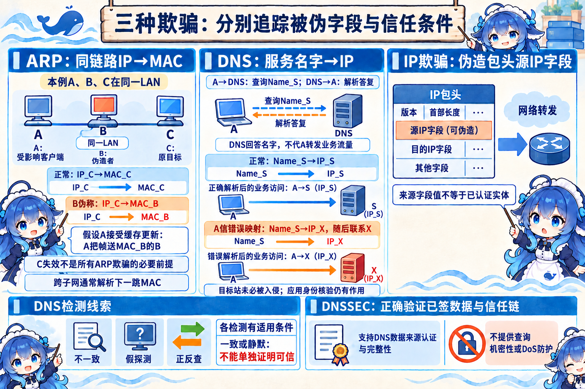
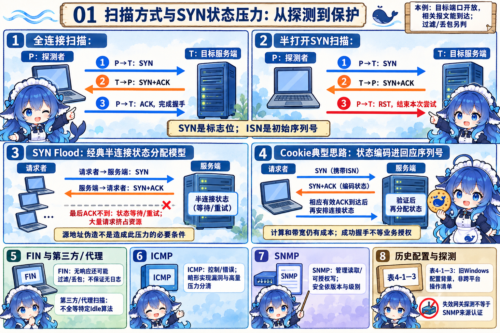
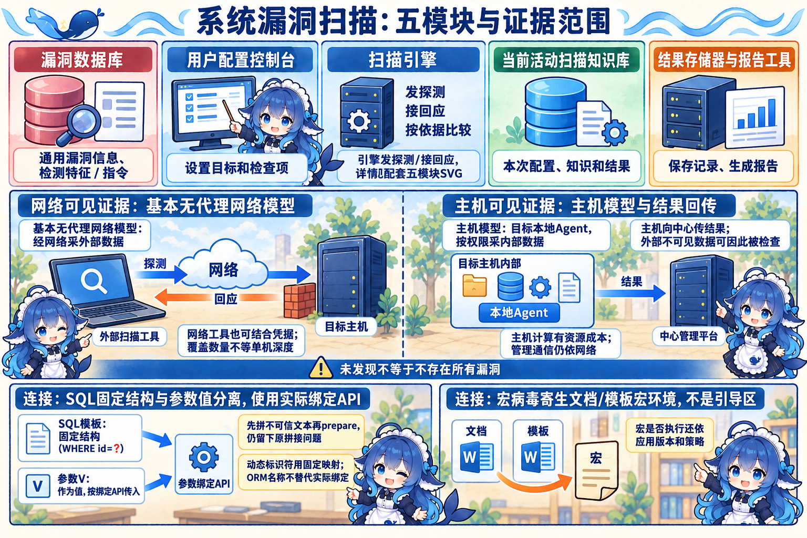
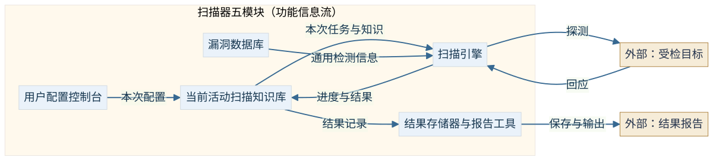
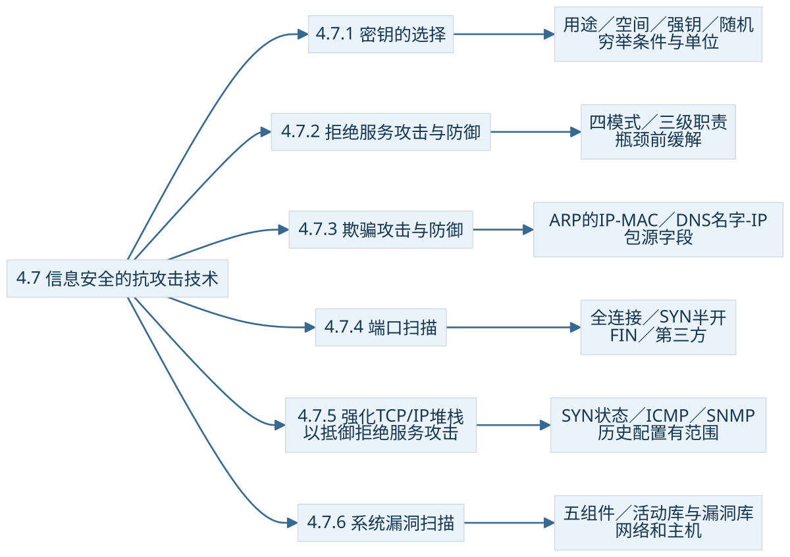

4.7.1 密钥的选择
同一份数据可以由数据加密密钥 DK 保护，DK 的交付又可由密钥加密密钥 KK 保护。这是用途分类，不能把“任何会话钥都只能是 DK、任何长期钥都只能是 KK”当规则。4.5 的主密钥包装会话密钥就是一个分层例子。
教材选择与生成密钥考虑三个方面：增大密钥空间、选择强钥、随机性。空间回答可取多少候选；强钥还要符合算法的参数与弱钥限制；随机性需要合适的随机源或密码学安全伪随机生成器，并考虑不可预测性。长位串若由可预测规则产生，不能只按名义长度判强。统计看起来均匀也不足以证明下一项不可预测。公钥参数须按算法形成结构，不能任取一段随机字符就叫公钥。
完整演算：空间、检验速率和时间
以下是自编穷举模型，不代表某台硬件的实测破解速度。设目标均匀分布在 M 个候选中，按固定顺序不重复检验，每秒可有效检验 r 个候选。目标在第 j 个位置的概率为 1/M，每次检验按 1/r 秒计。若目标有明显偏好、生成器可预测或速率变化，平均时间不能直接套这里的结果。
二进制例：k=20，r=1024 候选/秒
平均采用 M/2 近似；精确式保留 M+1。k 是本模型候选位数，不能把 RSA 模数位长或摘要输出位数直接当成这个空间的安全强度。
字符例：a=4，L=6，r=64 候选/秒
L 按字符／符号计，不是密钥 bit 长。空间有 4096 个字符串不等于人实际均匀选择它们。这里“不重复”限制的是穷举中不重复猜同一个字符串，不限制字符串内部重复字母。

改变参数：k=24，r=4096 候选/秒
先计算，再展开完整答案
位数增加 4 位使空间增大 16 倍，但本题速率也变成 4 倍，最坏时间因此是原例的 4 倍，不能只看其中一个参数。
教材列“每秒一百万次”和某些字节长度所需年数，是给定速率下的历史演算背景。本册使用上面明确的速率、单位与近似，密钥长度、熵和针对具体攻击的安全强度分别理解。
4.7.2 拒绝服务攻击与防御
合法用户得不到正常服务，可用性受到损害。教材将拒绝服务模式归纳为四类，目标不限于远程软件报文：资源、配置、物理部件或处理逻辑都可能成为影响环节。


| 教材模式 | 本例机制 | 被影响的服务条件 |
|---|---|---|
| 消耗资源 | 带宽、CPU、内存、磁盘或连接状态被过度占用 | 正常请求难取得所需资源 |
| 破坏／更改配置 | 关键路由、服务启动或访问配置被改坏 | 正常路径或服务方式失效 |
| 物理破坏／改变部件 | 网络线缆、设备、电源、冷却等受影响 | 支撑服务的物理环境失效 |
| 利用处理错误 | 输入触发服务或旧协议栈的错误处理 | 程序异常、死锁或服务失效 |
“加密系统数据”不是这四个模式名称之一，归档否定题按列表选它。合法加密承担保密职责；若被恶意用来阻止合法数据使用，后果仍可能涉及可用性，不能从那道题推出所有加密行为都与拒绝服务无关。单源也可造成 DoS，不能以今天设备性能较高就排除单源攻击。
控制命令与实际攻击流量
教材图 4-8 的经典三级模型中，Client 是攻击者操作的发起／控制端，Handler 在受控节点中转指令，Agent 接收主控命令并对目标实际实施攻击。Client 在这里不是普通业务客户端；这道组件题要追到真正执行的一端。原图连线体现拓扑，本册另用标明语义的箭头区分控制链和攻击流量。
该三级模型是本题范围，现代分布式攻击也可有其他控制结构。多个不同源 IP 可能来自伪造，不能直接等于多个真实攻击节点；“分布式”需要来源协同等证据。大量等待连接、高流量、无用分组和服务受损是教材的观察线索，具体 TCP 状态、来源与业务背景决定如何诊断。
按瓶颈选择缓解位置
教材的方法包括识别报文特征、监视端口、统计流量、修正漏洞。特征和异常量提供调查线索，不独立证明某个地址就是幕后控制者；UDP 31335、27444 与 TCP 27665 是旧工具背景的端口例，不是所有现代 DDoS 的固定端口。正常业务也会使用高编号端口。
连接状态压力可通过相应的握手保护、合理容量与超时策略缓解；过短等待会伤及慢链路上的合法连接。若上游带宽已拥塞，本机丢包不能释放先前占满的上游链路，措施须放到瓶颈前。补丁修复具体错误，不能单靠“已打补丁”保证任何规模流量下的服务可用。
4.7.3 欺骗攻击与防御
先看被伪造的是哪一项：ARP 改同链路的 IP→MAC 映射，DNS 改域名→IP 解析，IP 欺骗改包的源 IP 字段。三个名字不能只靠“地址／解析”字面选择。


ARP：给哪个下一跳 MAC 发帧
本例 A、目标 C、欺骗者 B 在同一局域网。正常缓存把 IP_C 对应到 MAC_C。B 宣称 IP_C 对应 MAC_B，假定 A 接受并更新缓存，A 就把本应送给 C 的帧送给 B。新图使用符号地址，原图四段 MAC 写法按示意缩写看待，不作完整以太网地址。跨子网通信时通常解析下一跳网关的 MAC，不能把 ARP 说成解析任意远端网站的 MAC。
原图 4-9 还画“使 C 瘫痪”的情境，本册保留其作为该例步骤的来源说明；导致错误映射的关键是 A 信了伪造声明，C 失去工作能力不是所有 ARP 欺骗的必要条件，接收更新的行为也依实现与控制策略。防范围绕可信映射、更新校验与链路监控；教材的静态绑定、双向绑定及软件例是对应措施背景，不沿用“软件完全不占资源”的宣传。
DNS：查询结果把名字指向哪里
A 查询服务名字 Name_S，正常答案指向 IP_S。若 A 信了伪造的 Name_S→IP_X，就会按该解析联系 X；目标服务器本身不一定已被入侵，影响范围也由哪些解析／缓存受影响决定。后续 HTTPS 等身份验证仍有作用，错误解析并不自动绕过全部应用信任检查。
| 教材检测方法 | 观察或假设 | 条件辨析 |
|---|---|---|
| 被动监听 | 建立请求与应答对应，观察异常多答或不一致 | 不一致可以是线索，不能排除缓存、时间和负载变化等合法原因后省略判断 |
| 虚假报文探测 | 向非 DNS 服务发探测，观察是否有冒充应答 | 依赖欺骗者仍盲目应答的假设；未收到答复不证明无人欺骗 |
| 交叉／反向查询 | 对返回 IP 检查反向名字 | 正反名称并非总一一对应，同与不同都不能单独替代密码学真实性验证 |
DNSSEC 在正确验证已签数据与信任链等条件下支持 DNS 数据来源认证和完整性，不提供查询内容机密性或 DoS 防护。到解析器的加密信道和对 DNS 数据签名的验证是不同职责，不把“传输已加密”当作所有解析数据可信。
IP：源字段与实体身份
包头源 IP 可以被伪造，以依赖该字段的信任关系可能被利用。教材“先使被冒充主机失效”是在旧例中的做法，不是所有源地址伪造的统一前提。来源过滤可限制不符合网络来源规则的分组；关键实体身份应由相应认证机制核验，不能只看来源 IP。
教材此处把 SYN 与 ISN 写在一起，本册明确字段：SYN 是控制标志位，ISN 是初始序列号；ACK 也要分确认标志与确认号。TCP 三次握手解决连接建立与序号同步，不自动证明应用主体已经认证或获得权限。
4.7.4 端口扫描
IP、传输协议与端口用来描述通信端点；TCP 连接还要关联双方端点。探测可帮助识别服务和协议栈线索，成功连到一个端口不等于已找到某个漏洞。
| 教材四方式 | 开放端口的典型题内交互 | 应保留的条件 |
|---|---|---|
| 全 TCP 连接 | 探测者发 SYN，目标回 SYN+ACK，探测者回 ACK | 完成三次握手；日志与可见性取决实现和监控 |
| 半打开 SYN | SYN→SYN+ACK 后，探测者发 RST | 本例不发送第三次握手 ACK；目标回 RST 是另一种状态线索 |
| FIN | 在题设响应行为中，关闭端口回 RST，开放可能丢弃无应答 | 受协议栈、过滤、丢包影响；无应答可能是开放或被过滤，不承诺“秘密”就无日志 |
| 第三方／代理扫描 | 利用另一主机承担或间接参与探测 | 教材概念不等于所有实现都使用特定 IP ID 空闲扫描算法 |


UDP 没有 TCP 三次握手；应用应答或 ICMP 错误可提供线索，但无应答也不能独立证明开放。原笔记的 Xmas／Null／Idle 等是补充名称，本节以教程四方式为主干，不展开实作扫描步骤。
4.7.5 强化 TCP/IP 堆栈以抵御拒绝服务攻击
SYN Flood 的经典状态分配模型：服务端收到 SYN，回复 SYN+ACK，并为未完成连接保存状态；最后 ACK 不到时，状态可能继续等待／重试。许多这类未完成请求可挤占半连接资源，妨碍新连接。它与半打开探测收到回应后发送 RST 结束尝试，目的与过程不同。
源地址伪造是教材的例子，控制真实主机不回应也可造成 SYN 状态压力，不能把“全部地址必为假”写成定义。SYN Cookie 的典型思路把所需状态编码到回应序列号，收到相应有效 ACK 后再安排连接状态；具体编码依实现，计算与带宽仍有成本。SYN 代理把握手验证前置，成功握手只说明相应交互完成，不自动授予业务访问权限。
ICMP 提供错误／控制等信息，畸形数据触发旧实现处理错误或大量报文占用资源是两种影响方式，不能把所有 ICMP 流量都称攻击。SNMP 可读取管理状态，也可能在所授权限下改变设备配置；其认证、权限和可选保密机制要按相应版本／安全级别判断。
历史配置连接：教材表 4-1—4-3
这些表列旧 Windows 注册表参数及数值，原文位置为印刷167—168页。它们帮助理解容量、等待、路由与管理设置可能影响服务，不作为当前 Mac／Linux／Windows 的统一操作清单。现代效果和支持情况须以具体平台为准，本轮没有修改或实机测试这些配置。
Microsoft 的属性文档明确 EnableDeadGWDetect 对应失效网关探测与转向备用网关。原表 4-3 放在 SNMP 防御标题下，不能仅据此把该开关等同于 SNMP 来源认证或消息保密；配置硬化与协议安全职责分别理解。
4.7.6 系统漏洞扫描
扫描按规则、可见数据和执行权限检查弱点，结果供评估与处置。教材网络扫描器有五部分，漏洞数据库和当前活动扫描知识库承担不同的内容，不能因都叫“库”就合并成一项。




| 模块 | 教材职责 |
|---|---|
| 漏洞数据库 | 保存漏洞信息及检测相关指令／特征 |
| 用户配置控制台 | 设置目标与要检查的漏洞 |
| 扫描引擎 | 按配置发探测、接回应、比较相关检测依据 |
| 当前活动扫描知识库 | 管理活动扫描配置／知识及相关结果，供引擎与报告使用 |
| 结果存储器与报告工具 | 存结果、根据记录生成报告 |
在教材基本部署模型里，网络工具从外部经网络获取数据，目标不用安装本地代理；主机工具通常在目标安装 Agent／服务，按授权读取本地文件、进程、补丁与配置，本地完成很多比对，向中心传回结果，所以能看到外部探测不易见的数据，通常减少探测往返流量。大网覆盖更多主机，不等于单机能发现的漏洞更深。
这些比较有模型条件。网络工具也可结合凭据获取内部信息，主机工具的可见性仍受权限和采集能力限制；主机计算不是零 CPU／内存开销，管理与报告通信也不保证完全不受网络影响。教材价格便宜、维护简便等是当时的比较背景。一次扫描没发现，不证明不存在所有漏洞；仅有服务版本线索时，还需结合补丁、配置与具体检测依据。
连接：SQL 输入与宏病毒宿主
物流车辆案例的 SQL 安全要求在应用／数据库边界处理：固定查询结构与参数值分离，按正确绑定 API 使用。若先把不可信输入拼进查询文本，再调用名为 PreparedStatement 的接口，仍没修正那处拼接。ORM 的安全效果取决其实际绑定路径；动态表名等标识符通常要固定映射，不能随便用值占位符替代。合法 UNION 操作本身不是攻击标签，联合注入还要有不安全拼接与相应回显／查询条件。
宏病毒是文档／模板宏执行环境里的恶意代码，题例 Macro.Melissa 的 Macro 为分类线索，目标应从 Word／Excel 等文档类选择，不是引导区。不同产品命名与具体样本能力不能按一个前缀推到所有软件；是否执行还依应用版本、宏策略等条件。文件型、引导型、蠕虫与木马是进一步的感染／运行方式连接，本节不把笔记自加4.7.7/8列为教程目录。
证券案例三问另把行为和属性连起来：监听、按其题意的窃取式截取、流量分析属被动获取；原样旧报文重新注入是主动重放。其 CIA 题中重放归完整性，监听归保密性，拒绝服务归可用性，篡改归完整性。所给症状按来源答案叫 DDoS，严格来源证据仍要分清与 SYN Flood 机制的维度；该案例未提供个人作答，不生成真实错误次数。

